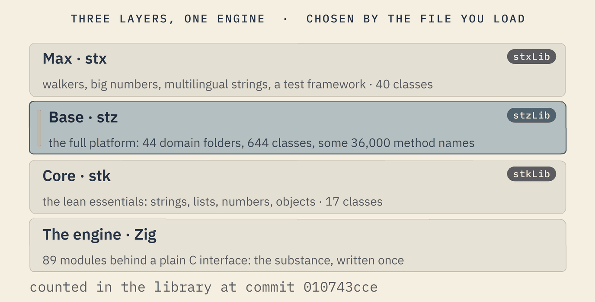
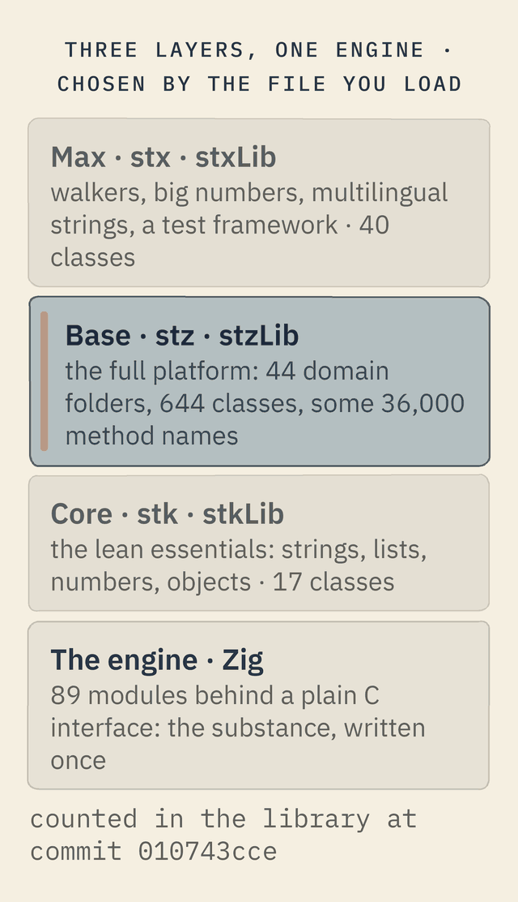

The architecture
Softanza is three layers of one vocabulary over one engine. A program chooses its layer by the file it loads; the engine does the heavy work behind a plain C interface; and every domain is a folder with an object that opens it. This page says what each part holds today, and where the single executable stands.
Three layers over one engine
Softanza speaks one vocabulary at three depths. Core holds the lean essentials, for programs that need little. Base is the whole platform, the one the rest of this site describes. Max adds advanced pieces on top of base. A program chooses its depth by the file it loads; base loads core first, and max loads base.


At the core level, a lean stkList answers the two basic searches, the first and the last position, in plain code with no call to the engine.
o1 = new stkList([ "one", "and", "one", "makes", "two", "ones" ])
? o1.FindFirst("one")
? o1.FindLast("one")1 3
run on 2026-10-02 02:42 inside the library at commit 0e72e2e2c; taken from core/test/stkListTest.ring(opens in a new tab)
At the base level, stzList answers the same questions with the same verbs, and adds relative searches with named parameters.
o1 = new stzList([ "_", "_", "♥", "_", "_", "♥", "_" ])
? o1.FindFirst("♥")
? o1.FindLast("♥")
? o1.FindNext("♥", :StartingAt = 3)
? o1.FindPrevious("♥", :StartingAt = 6)3 6 6 3
run on 2026-10-02 02:42 inside the library at commit 0e72e2e2c; taken from base/test/list/282_findfirst.ring(opens in a new tab)
The same question gets the same verb at both depths; base simply knows more ways to ask it.
Which layer do I load
The three layers are the architecture's one dependency rule, applied to depth of capability and not to concern. A solution is placed at the layer that is enough and not higher, so it embeds only what it uses. Core is for small devices and lean binaries: system artefacts and simple features at the minimum load. Base holds the basic features, with Softanza's gymnastics and stylistic innovations, enough for most requirements. Max holds the strong innovations. A layer is a folder, a prefix, an entry file and a set of libraries, with no ceremony of adapters.
A device, or a lean binary
Load core. At the commit read for this page it is broken: two of its classes call twelve engine names that no engine file registers, and nine test files guard it where base has more than five thousand. Reported to the library.
Most solutions
Load base. It is the whole platform, and everything else on this site describes it.
Walkers, big numbers, multilingual strings, the test framework
Load max, which is what max actually holds. Its prefix is a minority: most of its classes still carry the base prefix.
The convention is a name: stkString in core, stzString in base, stxString in max. In practice base does not inherit core. stzString inherits the library's root object, core carries a parallel hierarchy of its own, and the seven domains they share are implemented twice over the same engine. One vocabulary at three depths is true of the names and of the loading, and it is not true of the inheritance.
At the build, the goal is one library per engine domain and not per class: a client that needs only string operations loads only the string library. That holds in the engine today, and for the web a group list is fixed at compile time, so an unused group is not in the compilation at all; measured on one solution, the full edge is 12.5 KB and the kiosk 8.6 KB. A loader that brings one domain of base without the others, and a third set of libraries for max, are directions and not built.
The Softanza way A layer is chosen by the file that is loaded. A switch flag was tried and removed: the load directive pulls in every file it sees whatever the branch, so a flag that silently does nothing is the part that misleads. A mechanism that could not keep the rule was replaced by one that cannot break it, and the reason was written where the next reader stands.
in construction Under the pressure of time everything went into base while the engine, the planes and the customers advanced. Base holds 93.2 per cent of the lines of the three layers and 44 domain folders where the contract placed 23. The project's method, to deliver small and let the foundations mature without blocking a delivery, makes that defensible exactly as long as the debt is visible; a folder for what is not yet placed, with a promotion path, is that method as a mechanism. No document names the re-layering yet, and which classes belong in max is the author's decision. The counts were read from the files at library commit 93d7a39 by an outside assessment on 2026-10-07; nothing was run.
The engine beneath
Beneath the three layers is one engine, written in Zig and compiled to machine code: 89 modules built from 401 source files, four for core and 85 for base. Each module has two doors. One is a plain C interface of 752 functions, which any language able to call C can use. The other is the face the library calls, with 2,652 functions registered for it. When the library loads, it opens each module and picks the right file for the system it runs on.
The library calls the engine directly: these exact sums and products of big integers are computed by the engine's number module, not by the layer above.
a = StzEngineBigIntFromString("99999999999999999999999999999999")
? StzEngineBigIntToString( StzEngineBigIntAdd(a, StzEngineBigIntFromString("1")) )
? StzEngineBigIntToString( StzEngineBigIntMul(a, a) )100000000000000000000000000000000 9999999999999999999999999999999800000000000000000000000000000001
run on 2026-10-02 02:42 inside the library at commit 0e72e2e2c; taken from base/doc/design/SOFTANZA_NUMBER_ENGINE_PLAN.md(opens in a new tab)
The Softanza way The substance is written once, in the engine, and the layers above are its faces. A second face, or a second machine, reaches the same modules through the same C interface, so nothing is written twice and nothing drifts apart.
in construction The engine is built and run on Windows today. A Linux build of 85 of the 89 modules exists on a working branch; the four that remain handle HTTP, events, interfaces and windows.
A domain is a folder
Each domain lives in its own folder, with an object that opens it and a data format of its own; a domain never scatters global functions with no object behind them. That is the first law of the architecture. Base holds 44 such folders today:
agentic · app · appserver · cluster · common · conversation · data · datetime · education · error · extercode · extincode · file · geo · governance · gpu · graph · graphics · gui · i18n · learning · linguistic · list · math · meta · natural · network · neural · number · object · optim · perf · platform · reactive · refine · reflect · regex · security · service · sound · stats · string · system · table
Loading follows the layers today: a program loads core, base or max, and base brings all its folders at once. A single engine module can also be opened alone, as the GPU guards do. A loader that brings one domain of base without the others is not built yet.
One executable, no dependency
What exists today:
- A builder that crosses platforms. From one Windows machine, the builder uses Zig to compile programs for Windows, Linux and the web, and checks each file it produces by its first bytes. Its guard holds 38 checks.
- A script with nothing to install. A program in the platform's script becomes a native executable with its virtual machine compiled into it, so the target machine needs no runtime installed. This is proven today on a one-line program.
- Only what is used, for the web. A product declares what each of its parts needs, and the builder ships only the engine groups declared: a build that carries the solver alone is smaller than the full one.
Declare what each part of a product needs, and Softanza computes the engine subset to ship: the phone's on-device module carries only the aggregation and solver groups.
oDelivery = new stzDelivery("restolean")
oDelivery.AddSuperApp(:phone, :Android)
oDelivery.AddBackend(:api, :LinuxServer)
oDelivery.AddFirmware(:node, :ESP32)
oDelivery.NeedsIn(:phone, [ :Unicode, :DateTime, :PivotTable, :ConstraintSolver, :Collection, :Neural, :Regex ])
oDelivery.NeedsIn(:api, [ :PivotTable, :Neural ])
oDelivery.NeedsIn(:node, [ :GPIO, :Pattern ])
oPlan = oDelivery.Plan()
? "engine caps: " + @@( oPlan.EngineCapsFor(:phone) )
? "wasm groups: " + @@( StzWasmGroupsFor( oPlan.EngineCapsFor(:phone) ) )engine caps: [ "pivottable", "constraintsolver" ] wasm groups: [ "aggregation", "solver" ]
run on 2026-10-02 02:42 inside the library at commit 0e72e2e2c; taken from base/doc/narrations/stz-emulating-the-whole-solution-narration.md(opens in a new tab)
What does not exist yet is a whole Softanza program and its engine packed into one file with no dependency, holding only the code the program uses. That is the direction. The next distribution, still an experiment, is designed as one static binary, and its runner already embeds its virtual machine in a single executable.
Counts read in the library at commit 010743cce: classes declared in the files each entry file loads, and method names counted as definitions, aliases included. Sources: the base entry file(opens in a new tab), the engine's build file(opens in a new tab), the builder(opens in a new tab) and its guard(opens in a new tab).